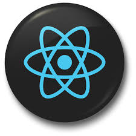
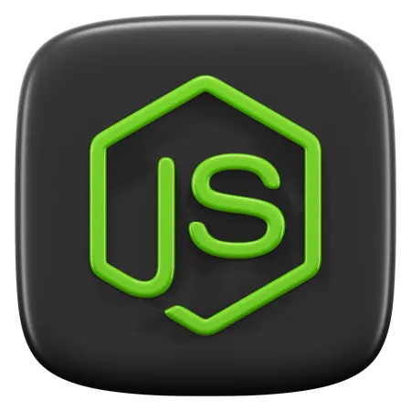

ABOUT ME
SHRADHA GUNJKAR
Hi🖐️, I’m Shradha a MERN Stack/Full-Stack Developer👩💻 passionate about building scalable, high-performance web applications and crafting seamless user experiences through clean code and modern technologies.
With a strong foundation in visual design and interactive systems, I bring ideas to life through thoughtful design and smooth animations.
WHAT I CAN DO FOR YOU
As a digital designer, I craft experiences that connect deeply and spark creativity.
DISCOVER MY JOURNEY IN WEB DEVELOPMENT
From a curious learner to a passionate web developer, my journey is driven by building real-world solutions, writing clean code, and continuously improving my skills.
I started My Web journey with practicing & Created modern UI designs, converted Figma designs into clean code, and improved website responsiveness and accessibility.
Building responsive web applications using HTML, CSS, JavaScript, React, Node.js, and MongoDB. Focused on performance, scalability, and user experience.
Learned core web technologies including HTML, CSS, JavaScript, Git, and basic backend concepts through projects and practice.
MY TECH STACK
These are the core tools and technologies I use to design, build, and deploy modern full-stack web applications.
VS Code
My primary code editor for writing clean, efficient code with powerful extensions and developer-friendly workflows.

GitHub
Version control and collaboration platform for managing codebases, tracking changes, and deploying projects.

React.js
JavaScript library for building fast, scalable, and component-based user interfaces.

Node.js
Backend runtime for building REST APIs, handling server-side logic, and connecting databases.

Framer
Used to design and develop interactive, responsive front-end experiences with smooth animations.